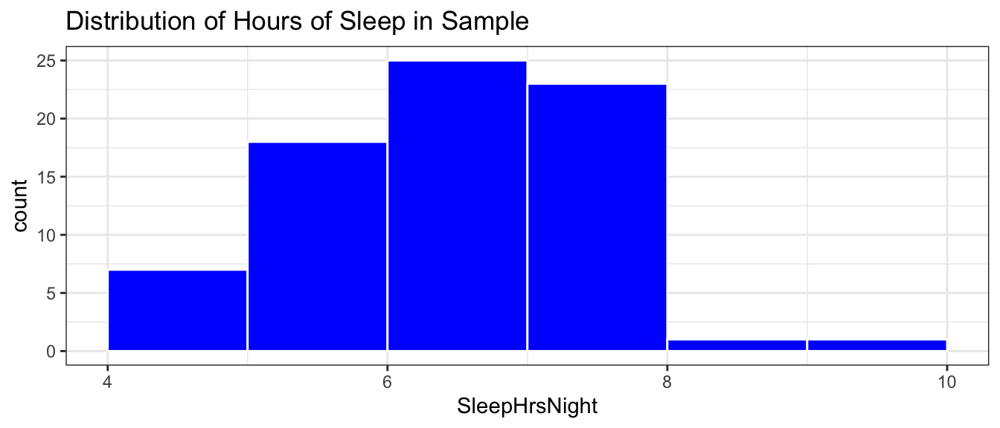
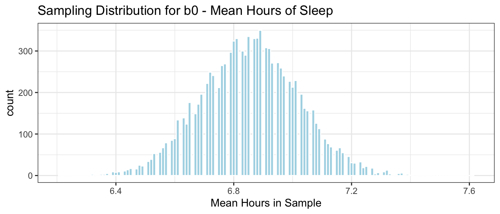
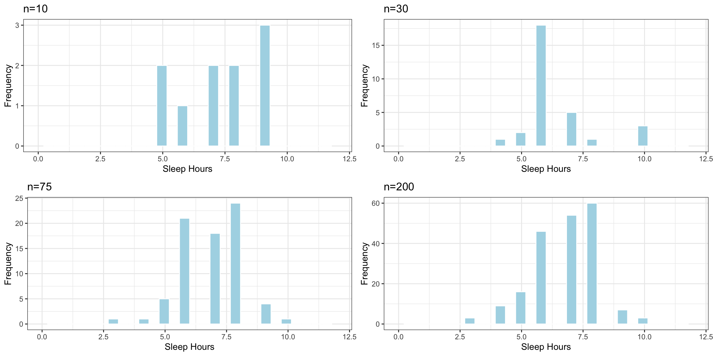
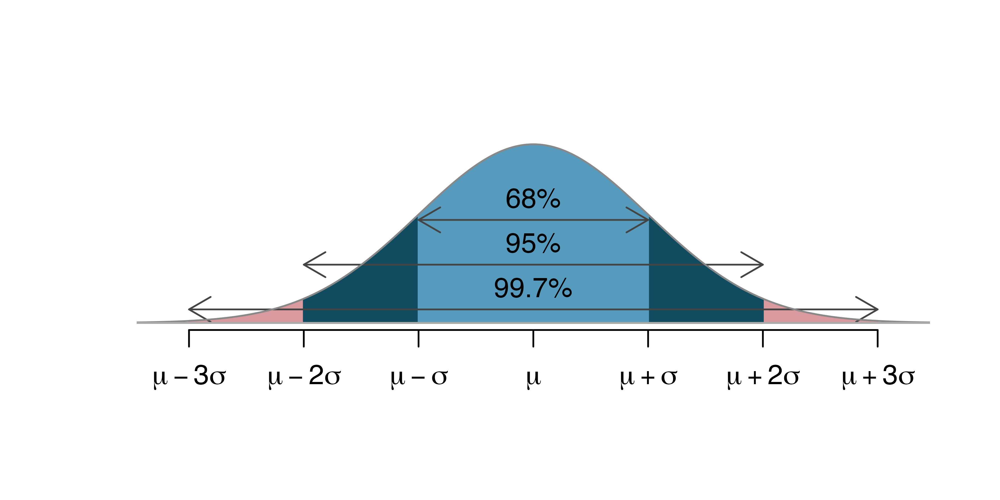
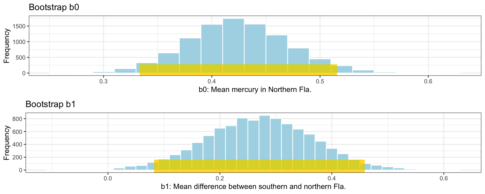
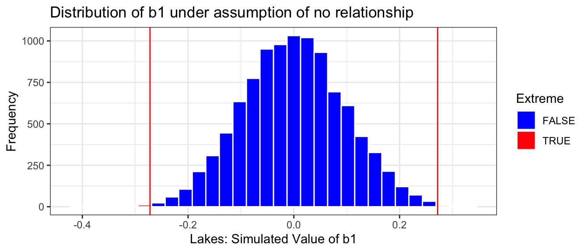
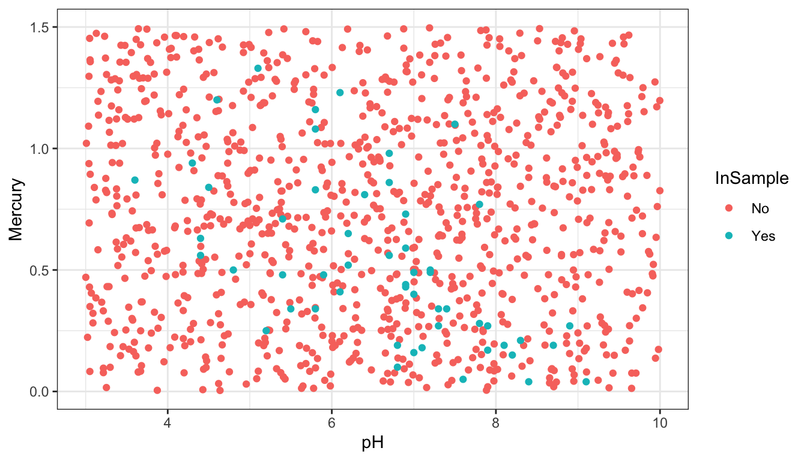
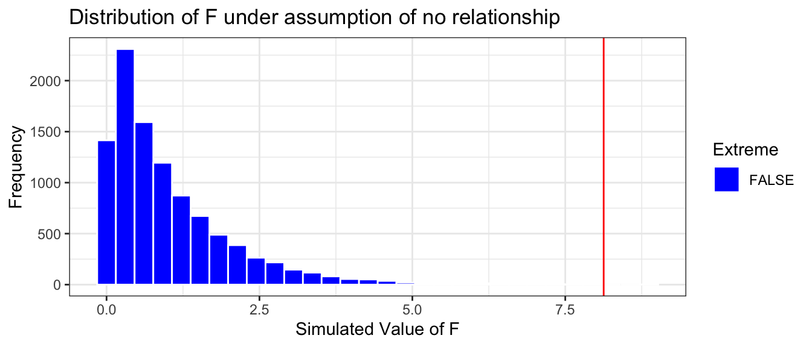

Conceptual Learning Outcomes
10. Interpret and distinguish between sample standard deviation and standard error of a sampling distribution for a statistic.
11. Explain how to use bootstrapping to calculate confidence intervals.
12. Interpret confidence intervals in context.
13. Describe the steps of a permutation-based hypothesis test in context (including writing hypotheses, identifying a test statistic, and explaining how to use permutation to obtain a p-value.)
14. Interpret p-values in context.
15. Compare and contrast the conclusions we can draw from confidence intervals and hypothesis tests.
Computational Learning Outcomes
F. Perform bootstrapping in R.
G. Perform permutation-based hypothesis tests in R.
3.1 Sampling Variability
3.1.1 Population and Sample
In statistics, we often do not have the time, money, or means to collect data on all individuals or units on which we want to draw conclusions. Instead, we might collect data on only a subset of the individuals, and then make inferences about all individuals we are interested in, using the information we collected.
Vocabulary:
A population is the entire set of individuals that we want to draw conclusions about.
A sample is a subset of a population.
A parameter is a numerical quantity pertaining to an entire population or process.
A statistic is a numerical quantity calculated from a sample.
The purpose of this section is to explore how statistics calculated from a sample compare to the entire population.
We’ll work with data from the American National Health and Nutrition Examination survey (NHANES). This is a survey administered to civilian residents of the United States, which aims to collect data on several health and socioeconomic factors.
The dataset contains information on 12,280 adult U.S. residents. While this is really just a sample of all U.S. residents, let’s pretend for the purposes of this section that this really was our entire population. Perhaps, we can pretend that these are all the adults living in a certain town.
The first 6 rows of the data are shown below.
head(Population)
# A tibble: 6 × 9
Gender Age Race1 Education HHIncomeMid HomeOwn Height Weight SleepHrsNight
<fct> <int> <fct> <fct> <int> <fct> <dbl> <dbl> <int>
1 male 34 White High Sch… 30000 Own 165. 87.4 4
2 female 60 Black High Sch… 12500 Rent 166 117. 4
3 male 26 Mexican 9 - 11th… 30000 Rent 173 97.6 4
4 female 49 White Some Col… 40000 Rent 168. 86.7 8
5 male 80 White Some Col… 17500 Own 174. 79.1 6
6 male 80 White 9 - 11th… 17500 Own 180. 89.6 9
One of the variables SleepHrsNight is a self-reported estimate of the number of hours of sleep the participant gets at night or on the weekends.
The histogram shows the distribution of sleep hours among the 12,280 residents in the population.
Sleep_Plot_Pop <-ggplot(data=Population, aes(x=SleepHrsNight)) +geom_histogram(fill="blue", boundary=0, binwidth=1, color="white") +ggtitle("Distribution of Hours of Sleep") +theme_bw()Sleep_Plot_Pop
We see that the distribution of sleep hours is roughly symmetric, with most people getting between 5 and 8 hours per night.
We’ll calculate the mean and standard deviation in hours of sleep among the population.
Population |>summarize(Mean_Sleep =mean(SleepHrsNight),SD_Sleep =sd(SleepHrsNight), N=n())
# A tibble: 1 × 3
Mean_Sleep SD_Sleep N
<dbl> <dbl> <int>
1 6.86 1.44 12280
Recall that if we fit a statistical model with no explanatory variables, the intercept estimate will be the overall population mean.
In this case, we’ll denote the intercept \(\beta_0\), rather than \(b_0\), as we’ve done before. It is customary to use Greek letters to denote population parameters, and English letters to denote sample statistics. Since we are fitting the model to all 12,280 adult residents of our fictional town, we’ll call the intercept \(\beta_0\).
The mean number of hours of sleep among all adult residents of the city is \(\beta_0 =\) 6.86 hours.
3.1.2 Sampling Distribution and Standard Error
We typically won’t have data on the full population and won’t know the values of parameters like \(\beta_0\). Instead, we’ll have data on just a sample taken from the population.
To illustrate, we’ll take samples of 75 residents and see how the mean hours of sleep in the samples compare to the population.
First Sample
We use the sample command to take a random sample of 75 residents. The first 6 residents in the sample are shown below.
# take sample of 75 residentsSample1 <-sample(Population, size =75)head(Sample1)
# A tibble: 6 × 10
Gender Age Race1 Education HHIncomeMid HomeOwn Height Weight SleepHrsNight
<fct> <int> <fct> <fct> <int> <fct> <dbl> <dbl> <int>
1 female 18 White <NA> 17500 Own 173. 165 5
2 male 24 White 9 - 11th… 12500 Rent 172. 60.4 6
3 female 27 Mexican Some Col… 30000 Rent 159. 54.2 6
4 male 80 White 8th Grade 22500 Own 168. 84.6 7
5 male 18 White <NA> 2500 Own 176. 67.5 8
6 female 47 Black High Sch… NA Own 170. 103. 6
# ℹ 1 more variable: orig.id <chr>
The distribution of sleep hours among the 75 people in the sample is shown below.
Sleep_Plot_Sample1 <-ggplot(data=Sample1, aes(x=SleepHrsNight)) +geom_histogram(fill="blue", boundary=0, binwidth=1, color="white") +ggtitle("Distribution of Hours of Sleep in Sample") +theme_bw()Sleep_Plot_Sample1

Notice that while the sample is not the same as the population, it has a roughly similar shape, center, and amount of spread.
The mean and standard deviation for the sample are shown below.
# A tibble: 1 × 3
Mean_Sleep SD_Sleep N
<dbl> <dbl> <int>
1 6.71 1.59 75
Notice that the mean hours of sleep differs from that of the population. This is not surprising, as we wouldn’t expect a statistic calculated from a sample of 75 to exactly match the parameter calculated from the entire population.
We’ll fit a model to the sample data and record the intercept.
In this case, we’ll denote the intercept \(b_0\), since it is a statistic calculated from our sample. \(b_0\) = 6.71 is an estimate of our population mean \(\beta_0\), which we happen to know is 6.86
In a real situation, we would typically not know \(\beta_0\), and would need to estimate it using \(b_0\). Since \(b_0\) shouldn’t be expected to match \(\beta_0\) exactly, we cannot say that \(\beta_0\) is exactly \(b_0\), but we can say that \(\beta_0\) is likely to be “close: to \(b_0\). In order to know how”close”, we need to know how much the sample statistic \(b_0\) could plausibly differ from the population parameter \(\beta_0\).
To investigate that, let’s take some additional samples of size 75, fit a model to estimate the mean hours of sleep \(b_0\) and see how much \(b_0\) varies between samples.
Let’s now take 10,000 more random samples of 75 adult residents and record \(b_0\), the estimated mean hours of sleep for each sample.
Samples_sleep <-do(10000)*lm(SleepHrsNight ~1, data =sample(Population, size=75))
The histogram below shows the distribution of \(b_0\), the mean hours of sleep in the 10,000 different samples.
Samp_Dist_Mean_sleep <-ggplot(data=Samples_sleep, aes(x=Intercept)) +geom_histogram(color="white", fill="lightblue", binwidth=0.01) +ggtitle("Sampling Distribution for b0 - Mean Hours of Sleep") +xlab("Mean Hours in Sample") +theme_bw()Samp_Dist_Mean_sleep

We notice that most of our 10,000 samples yielded means between 6.5 and 7.25 hours and that the distribution is roughly symmetric and bell-shaped.
The distribution shown in this histogram is called the sampling distribution for\(b_0\). The sampling distribution for a statistic shows the distribution of the statistic over many samples.
We’ll calculate the mean and standard deviation of the sampling distribution. How do these compare to the mean and standard deviation of the population that we saw previously?
Notice that the mean of the sampling distribution for \(b_0\) is about the same as the population mean \(\beta_0\) = 6.86
The standard deviation of the sampling distribution for the mean \(b_0\), however, is much less than the population standard deviation of 1.435. This makes sense, since there is much less variability in the sampling distribution for the mean hours of sleep than there was in the distribution of sleep hours for individuals. We saw that most individuals reported getting between 5 and 8 hours per night, while most samples of size 75 resulted in a mean between 6.5 and 7.25 hours, a much narrower range.
The standard deviation of the sampling distribution for a statistic is also called the standard error of the statistic. In this case, it represents the amount of variability in mean hours of sleep between different samples of 75 residents. This is different than the population standard deviation, which represents the amount of variability in hours of sleep between different individual residents.
Vocabulary:
The sampling distribution of a statistic is the distribution of values the statistic takes on across many different samples of a given size.
The standard error of a statistic is the standard deviation of that statistic’s sampling distribution. It measures how much the statistic varies between different samples of a given size.
Effect of Sample Size
Question:
Suppose the sample consisted of 10, or 30, or 200 residents, instead of 75? Would you expect the standard deviation of individual sleep times in the samples to increase, decrease or stay about the same? What about the standard error of the mean sleep time?
The histogram shows the distribution of sample standard deviations in random samples of each size. These represent the variability in sleep hours between individuals in the sample.

Notice that the variability in sleep hours between individual people stays roughly the same, regardless of sample size.
The table shows the standard deviation of individual sleep hours in each of the samples.
Sample_Size
SD
10
1.567021
30
1.383399
75
1.245966
200
1.419746
Sample size does not impact the amount of variability between individual people. Standard deviation in sleep hours does not systematically increase or decrease based one sample size (of course it varies a little based on the people randomly chosen in the sample).
Now, we’ll examine what happens to the standard error of the mean \(b_0\) as the sample size changes.
Distributions of Mean Between Different Samples
Notice that as the sample size increases, the sampling distribution of the mean becomes more symmetric and bell-shaped, and also more concentrated around the population mean \(\mu\).
The table shows the standard error of the mean for samples of different size:
Sample_Size
SE
10
0.4547698
30
0.2624521
75
0.1637800
200
0.0995903
As sample size increases, variability between means of different samples decreases. Standard error of the mean decreases. This is also true of standard errors for other statistics (i.e. difference in means, regression slopes, etc.)
3.1.3 Confidence Intervals
We saw that while statistics calculated from individual samples deviate from population parameters, over many samples, they approximately average to the population parameter (assuming the samples are chosen randomly).
Thus, when we have only a single sample, we can use the sample statistic as an estimate of the population parameter, provided we allow for a certain margin of error. The question is how much margin of error do we need?
The sampling distribution for the mean hours of sleep is shown again below. The population mean (\(\beta_0=6.856\)) is marked by the purple dotted line. The gold bar at the bottom of the histogram represents the range of sample proportions that lie within \(\pm 2\) standard errors of the true population mean:
Approximately 95% of the 10,000 samples produced proportions within \(\pm 2\) standard errors of the true population mean.
In a real situation, we won’t have access to the entire population, but only a single sample. For example, recall our original sample of 75 people, in which we observed a proportion of on-time arrivals of \(b_0=\) 6.71.
Since we now know that 95% of all samples produce proportions that lie within two standard errors of the population mean, we can obtain an estimate of the population mean \(\beta_0\) by adding and subtracting \(2\times \text{SE}(b_0)\) from our observed sample estimate \(b_0\).
Using probability theory, it can be shown generally that if the sampling distribution of a statistic is symmetric and bell shaped, then approximately 95% of all samples will produce sample statistics that lie within two standard errors of the corresponding population parameter. Such an interval is called an approximate 95% confidence interval for the population parameter.
Approximate 95% confidence interval: If the sampling distribution of a statistic is symmetric and bell-shaped, a 95% confidence interval for the population parameter is:
More generally, if we want to use a level of confidence that is different than 95%, we can adjust the value we multiply the standard error by. In general, a standard error confidence interval has the form:
where the value of \(m\) depends on the desired level of confidence.
Confidence intervals that are calculated by adding and subtracting a certain number of standard errors from the sample statistic are called standard error confidence intervals. This approach works as long as the sampling distribution is symmetric and bell-shaped. Probability theory tells us that in a symmetric and bell-shaped distribution, approximately 95% of the area lies within two standard errors of the center of the distribution, given by the true parameter value. We will, however, see that this approach will not work in all cases. Not all statistics produce sampling distributions that are symmetric and bell-shaped, and we will need an alternative way to calculate confidence intervals in these situations.

Image from https://openintro-ims.netlify.app/foundations-mathematical
Example: 95% Confidence Interval for \(\beta_0\)
We’ll calculate a 95% confidence interval for the mean hours of sleep in our fictional city, using our original sample where \(b_0\) = 6.71. The 95% confidence interval is:
Based on our sample of 75 residents, we can be 95% confident that the mean number of hours of sleep among all residents in the city is between 6.37 and 7.04 hours.
Knowing what we do about the true value of the population parameter \(\beta_0\), we can see that our interval does indeed contain the true population value of \(\beta_0=\) 6.86.
What does 95% Confidence Mean?
Suppose, instead of \(\beta_0=\) 6.8560261, our sample of 75 had resulted in a mean of \(\beta_0=\) 6.3. We can see from the sampling distribution that some samples did produce means that low.
Then, using the same formula we would obtain an approximate 95% confidence interval of
Notice that this interval does not contain the true value of \(\beta_0=6.85\). Does this mean we did something wrong when we calculated the confidence interval?
The answer is “no”. Notice we claimed to be only “95%” confident that our interval contains the true value of the population parameter \(\beta_0\). This means that we should expect 5% of samples taken randomly to yield a sample mean \(b_0\) so different from the population mean \(\beta_0\), that the resulting confidence interval would not contain the true value of \(\beta_0\). This does not mean we did anything wrong, just that we obtained an unusual sample just by chance. Since our procedure, namely adding and subtracting two standard errors, is designed to work 95% of the time, we can expect such samples to be rare.
In a real situation, we won’t know the true value of the population parameter, so we won’t know for sure whether or not our confidence interval contains this true parameter value.
To further understand the meaning of “95% confidence”, let’s explore what happens when we calculate confidence intervals based on estimates \(b_0\) obtained from many different samples. For each of our 10,000 different samples taken from our population, we’ll add and subtract two standard errors from the sample mean \(b_0\) corresponding to that sample.
The table below displays the value of \(b_0\), for the first 20 samples we took, along with the lower and upper bounds of the confidence interval, and whether or not the confidence interval contains the true parameter value \(\beta_0\) (either 1=TRUE or 0=FALSE).
The graphic below visualizes the confidence intervals produced using the estimates from the first 100 samples. The purple dotted line indicates the true value of \(\beta_0\). The black dots indicate the value of \(b_0\) for each sample. Intervals that do in fact contain the true value of \(p\) are shown in blue, and intervals that do not contain the true value of \(p\) are shown in green.
Out of these 100 samples, 91 contain the true value of the population parameter \(p\). This is close to the desired 95% confidence level.
The picture shows confidence intervals produced by the first 100 samples, but we actually took 10,000 different samples of 75 residents. Let’s calculate how many of these samples produced confidence intervals that contain the true value of \(p\).
prop(Samples_df_b0$Contains_beta0 ==TRUE)
prop_TRUE
0.9536
Again, notice that close to 95% of the samples produced confidence intervals contain the true population parameter \(\beta_0\). Note that for the red intervals that do not contain \(p\) nothing was done incorrectly. The sample was taken at random, and the confidence interval was calculated using the correct formula. It just happened that by chance, we obtained a sample mean \(b_0\) that was unusually high or low, leading to an interval that did not capture the true population parameter. This, of course, happens rarely, and approximately 95% of the samples do, in fact, result in intervals that contain the true value of \(b_0\).
This brings us back to the question “what does 95% confidence mean?”. An approximate 95% confidence interval means that if we take a large number of samples and calculate confidence intervals from each of them, then approximately 95% of the samples will produce intervals containing the true population parameter. In reality, we’ll only have on sample, and won’t know whether or not our interval contains the true parameter value. Assuming we have taken the sample and calculated the interval correctly, we can rest assured in the knowledge that that 95% of all intervals taken would contain the true parameter value, and hope that ours is among that 95%.
It might be tempting to say that “there is approximately a 95% chance” that the population parameter lies within the confidence interval, but this is incorrect. In the statistical framework used here (known as classical, or frequentist statistics), the population parameter is assumed to be a fixed, but (typically) unknown number. It either is within the interval, or it isn’t. We just (typically) don’t know which. There’s nothing random about whether or not the parameter value is in our interval, so it doesn’t make sense to speak of it in terms of chance or randomness. Randomness comes into play due to the fact that we selected a random sample, which will produce a statistic likely to differ from the population parameter due to sampling variability. A different statistical framework, known as Bayesian statistics approaches this differently, and would allow us to use randomness and chance to describe our beliefs about any uncertain quantity, including a population proportion. In this class, however, we’ll stick to the classical frequentist interpretation.
Of course, you might ask why we needed to calculate a confidence interval for the mean hours of sleep among all residents in the first place, since we actually have data on all 12,280 residents in our fictional town and already know the mean hours of sleep. The answer is that we don’t. But, in most real situations, we will only have data from a single sample, not the entire population, and we won’t know the true population parameter. We’ll be able to build on the ideas of sampling distributions and standard error that we learned about in this section to calculate confidence intervals in those scenarios.
3.2 Bootstrap Confidence Intervals
3.2.1 Mercury Concentration in Florida Lakes
A 2004 study by Lange, T., Royals, H. and Connor, L. examined Mercury accumulation in large-mouth bass, taken from a sample of 53 Florida Lakes. If Mercury accumulation exceeds 0.5 ppm, then there are environmental concerns. In fact, the legal safety limit in Canada is 0.5 ppm, although it is 1 ppm in the United States.
In our sample, we have data on 53 lakes, out of more than 30,000 lakes in the the state of Florida. We’ll attempt to draw conclusions about the entire population, consisting of all lakes in Florida, using data from our sample of 53. It is not clear how the lakes in this sample of 53 were selected, or how representative they are of all lakes in the state of Florida. Let’s assume for our purposes that the lakes in the sample can be reasonably thought of as being representative of all lakes in Florida.
We’ll divide the state along route 50, which runs East-West, passing through Northern Orlando.
from Google Maps
Our data come from a sample of 53 lakes, out of more then 30,000 in the entire state of Florida. The mercury levels of the 53 lakes in the sample are shown in the table below.
print.data.frame(FloridaLakes, row.names =FALSE)
ID Lake pH Mercury Chlorophyll Location Depth
1 Alligator 6.1 1.23 0.7 S Medium
2 Annie 5.1 1.33 3.2 S Deep
3 Apopka 9.1 0.04 128.3 N Medium
4 Blue Cypress 6.9 0.44 3.5 S Shallow
5 Brick 4.6 1.20 1.8 S Medium
6 Bryant 7.3 0.27 44.1 N Shallow
7 Cherry 5.4 0.48 3.4 N Shallow
8 Crescent 8.1 0.19 33.7 N Shallow
9 Deer Point 5.8 0.83 1.6 N Medium
10 Dias 6.4 0.81 22.5 N Deep
11 Dorr 5.4 0.71 14.9 N Medium
12 Down 7.2 0.50 4.0 S Deep
13 Eaton 7.2 0.49 11.6 N Shallow
14 East Tohopekaliga 5.8 1.16 5.8 S Medium
15 Farm-13 7.6 0.05 71.1 N Shallow
16 George 8.2 0.15 78.6 N Shallow
17 Griffin 8.7 0.19 80.1 N Medium
18 Harney 7.8 0.77 13.9 N Shallow
19 Hart 5.8 1.08 4.6 S Medium
20 Hatchineha 6.7 0.98 17.0 S Shallow
21 Iamonia 4.4 0.63 9.6 N Deep
22 Istokpoga 6.7 0.56 9.5 S Shallow
23 Jackson 6.1 0.41 21.0 N Deep
24 Josephine 6.9 0.73 32.1 S Shallow
25 Kingsley 5.5 0.34 1.6 N Deep
26 Kissimmee 6.9 0.59 21.5 S Shallow
27 Lochloosa 7.3 0.34 24.7 N Shallow
28 Louisa 4.5 0.84 7.0 S Medium
29 Miccasukee 4.8 0.50 14.8 N Medium
30 Minneola 5.8 0.34 0.7 N Medium
31 Monroe 7.8 0.28 43.8 N Medium
32 Newmans 7.4 0.34 32.7 N Shallow
33 Ocean Pond 3.6 0.87 3.2 N Deep
34 Ocheese Pond 4.4 0.56 3.2 N Deep
35 Okeechobee 7.9 0.17 16.1 S Shallow
36 Orange 7.1 0.18 45.2 N Shallow
37 Panasoffkee 6.8 0.19 16.5 N Shallow
38 Parker 8.4 0.04 152.4 S Medium
39 Placid 7.0 0.49 12.8 S Deep
40 Puzzle 7.5 1.10 20.1 N Shallow
41 Rodman 7.0 0.16 6.4 N Deep
42 Rousseau 6.8 0.10 6.2 N Medium
43 Sampson 5.9 0.48 1.6 N Deep
44 Shipp 8.3 0.21 68.2 S Shallow
45 Talquin 6.7 0.86 24.1 N Deep
46 Tarpon 6.2 0.52 9.6 S Shallow
47 Trafford 8.9 0.27 9.6 S Shallow
48 Trout 4.3 0.94 6.4 S Deep
49 Tsala Apopka 7.0 0.40 4.6 N Shallow
50 Weir 6.9 0.43 16.5 N Deep
51 Tohopekaliga 6.2 0.65 27.7 S Medium
52 Wildcat 5.2 0.25 2.6 N Deep
53 Yale 7.9 0.27 8.8 N Medium
The histogram shows the distribution of mercury levels in the 53 lakes in the sample.
Lakes_Hist <-ggplot(data=FloridaLakes, aes(x=Mercury)) +geom_histogram(fill="blue", color="white", binwidth =0.1) +ggtitle("Mercury Levels in Sample of 53 Florida Lakes") +xlab("Mercury Level") +ylab("Frequency") +theme_bw()Lakes_Hist
The table below gives the mean and standard deviation in mercury level among the 53 lakes in our sample.
We see that in our sample of 53 lakes, the mean mercury level is 0.527 ppm., which is just above Canada’s legal limit, though below the United States’ limit.
Suppose we want to estimate the mean mercury level among all Florida lakes. As we saw in the previous section, we should not expect the population proportion to exactly match the sample, due to random variability between samples. We can, however, use the sample statistic as an estimates and construct confidence intervals for the unknown population proportions.
In order to construct the confidence interval, we need to know how much each statistic could vary between different samples of size 53. That is, we need to know the standard error. In the previous section, we calculated the standard error by taking 10,000 different samples of the same size as ours from the population, calculating the proportion for each sample, and then calculating the standard deviation of the proportions obtained from these 10,000 different samples. This procedure will not work here, however, because unlike the previous example where we really did have data on the entire population of our city’s residents, we do not have data on all 30,000+ lakes in Florida. We cannot take a lot of different samples of size 53 from the population of all lakes, and thus, cannot obtain the sampling distributions for our statistics or calculate their standard errors. Instead, we’ll use a process that closely mimics what we did in Section 3.1, using only the information from the 53 lakes contained in our sample.
3.2.2 Bootstrap Sampling
All we have is a single sample of 53 lakes. We need to figure out how much the mean mercury level would vary between different samples of size 53, using only the information contained in our one sample.
To do this, we’ll implement a popular simulation-based strategy, known as bootstrapping.
Let’s assume our sample is representative of all Florida lakes. Then, we’ll duplicate the sample many times to create a large set that will look like the population of all Florida Lakes. We can then draw samples of 53 from that large population, and record the mean mercury level for each sample of 53.
An illustration of the bootstrapping procedure is shown below, using a sample of 12 colored dots, instead of the 53 lakes.
In fact, duplicating the sample many times and selecting new samples of size \(n\) has the same effect as drawing samples of size \(n\) from the original sample, by putting the item drawn back in each time, a procedure called sampling with replacement. Thus, we can skip the step of copying/pasting the sample many times, and instead draw our samples with replacement.
This means that in each new sample, some lakes will be drawn multiple times and others not at all. It also ensures that each sample is different, allowing us to estimate variability in the sample mean between the different samples of size 53.
An illustration of the concept of bootstrapping, using sampling with replacement is shown below.
The variability in a statistic (in this case mean mercury concentration) in our newly drawn samples is used to approximate the variability we would see in our statistic between different samples of 53 lakes if we could draw different samples from the population of all Florida Lakes.
The point of bootstrapping is to observe how much a statistic varies between bootstrap samples. This can act as an estimate of how much that statistic would vary between different samples of size \(n\), drawn from the population.
The steps of bootstrap sampling can be summarized in the following algorithm.
Bootstrap Algorithm
For an original sample of size \(n\):
Take a sample size \(n\) by randomly sampling from the original, with replacement. Thus, some observations will show up multiple times, and others not at all. This sample is called a bootstrap sample.
Calculate the statistic of interest in the bootstrap sample. This statistic could be a single mean, a difference in means, a regression slope, or other statistics like median, standard deviation, or a proportion.
Repeat steps 1 and 2 many (say 10,000) times, keeping track of the statistic of interest that is calculated in each bootstrap sample.
Look at the distribution of the statistic across bootstrap samples. The variability in this bootstrap distribution can be used to approximate the variability in the sampling distribution for the statistic of interest.
Bootstrap Samples of Lakes
Bootstrap Sample 1
The resample() function samples the specified number rows from a data frame, with replacement.
The lakes in the first sample are shown below. Notice that some lakes occur multiple times, and others not at all.
Notice that the sample mean of the bootstrap sample differs from that of the original sample. This happens because some lakes in the original sample show up multiple times and others not at all. By taking many bootstrap samples and estimating the variability in \(b_0\), we can estimate the standard error needed to calculate a confidence interval for the mean mercury level among all Florida Lakes.
Bootstrap Sample #2
Since bootstrap samples are taken with replacement, every sample will be different, allowing us to measure the amount of variability in our statistics between samples.
We take a second bootstrap sample and display the statistics below. Notice that the lakes chosen and omitted differ from the first sample.
We again use a model to estimate the mean mercury level in the bootstrap sample. Notice that these differ from the original sample and from the first bootstrap sample.
We’ll take another bootstrap sample. Notice how the lakes selected differ between bootstrap samples, ensuring our estimates of \(b_0\) will differ and we’ll be able to estimate variability.
Now that we’ve seen how bootstrap sampling works, we’ll take many different bootstrap samples and calculate our statistics for each of the samples. This will tell how how much our statistics can vary between sample. We’ll take 10,000 different bootstrap samples.
The do(10000) command tells R to do the command following it (in this case, take the bootstrap sample and calculate the statistic of interest) 10,000 times. We’ll store the results in a vector called Lakes_Bootstrap_Mean.
We’ll take 10,000 bootstrap samples, fit a linear model with only an intercept term, \(b_0\), and record the value of \(b_0\) in each bootstrap sample.
Bootstrap Distribution for Mean
Lakes_Bootstrap_Mean <-do(10000) *lm( Mercury ~1, data =resample(FloridaLakes, replace=TRUE))
The distribution of means observed in the 10,000 different bootstrap samples is shown below. This distribution is called the bootstrap distribution.
Lakes_Bootstrap_Mean_Plot <-ggplot(data=Lakes_Bootstrap_Mean, aes(x=Intercept)) +geom_histogram(color="white", fill="lightblue", binwidth=0.02) +xlab("b0: Mean Mercury in Sample") +ylab("Frequency") +ggtitle("Bootstrap Distribution for b0: Mean Mercury") +theme(legend.position ="none") +theme_bw()Lakes_Bootstrap_Mean_Plot
The bootstrap distribution is meant to approximate the sampling distribution of the statistic of interest (in this case the mean mercury level). Because it is based on the sample, the bootstrap distribution will be centered at the sample statistic (\(b_0 = 0.527\) in this case) while the sampling distribution would have been centered at the population parameter (\(\beta_0\)), the mean mercury level among all Florida lakes, which is unknown. The important things, however, is that the variability in the bootstrap distribution gives a good approximation of the amount of variability in the sampling distribution, so we can use the standard deviation of the bootstrap distribution (called bootstrap standard error) in our confidence interval calculation.
Bootstrap Standard Error
We calculate the standard deviation of this bootstrap distribution, which is an estimate of the standard error of the sample mean, \(\bar{x}\). It measures how much the mean mercury level varies between samples of size 53.
It is important to note that we are not saying that we are 95% confident that an individual lake lie in this range, or that 95% of all individual lakes lie in this range. We are only saying that we are confident that the average mercury level among all lakes lies in this range. A confidence interval is a statement about a population parameter (in this case the average mercury level), rather than about individual lakes in the population. Since there is more variability about individual lakes than overall averages, we’ll need to make a wider interval when talking about the mercury level for an individual lake.
Percentile Confidence Intervals
The confidence interval we obtained by taking \(\text{Estimate} \pm 2\times\text{Standard Error}\) is called a standard error confidence interval. This method is appropriate when the sampling distribution for our statistic (which we approximate using the bootstrap distribution) is symmetric and bell-shaped. An alternate and more general method for obtaining a confidence interval via bootstrapping is called the bootstrap percentile confidence interval. In this approach, we take the middle 95% of the values in the bootstrap distribution.
The percentile bootstrap confidence interval is implemented by setting method=percentile.
Notice that the standard error confidence interval closely matches the percentile interval. This will be true when the bootstrap distribution is symmetric and bell-shaped. When the bootstrap distribution is not symmetric and bell-shaped, then the percentile interval will be more reliable than the standard error interval.
3.3 Bootstrapping Model Coefficients
We’ve seen how to use bootsrapping to obtain confidence intervals for the mean mercury level among all Florida lakes. We can use the same process to obtain confidence intervals for other statistics, such as coefficients \(b_0\), \(b_1\), representing differences in means, or slopes, like we saw in Chapter 2.
3.3.1 CI for Difference in Means
Suppose we want to compare mercury levels for lakes in Northern Florida to lakes in Southern Florida.
The boxplot shows and table below describe the distribution of mercury levels for lakes in Northern Florida, compared to Southern Florida.
# A tibble: 2 × 4
Location MeanHg StDevHg N
<chr> <dbl> <dbl> <int>
1 N 0.425 0.270 33
2 S 0.696 0.384 20
In our sample of 33 Northern Lakes and 20 Southern Lakes, we saw a difference of 0.27 ppm. We’ll calculate a confidence interval to estimate how big or small this difference could be among all Florida lakes.
We’ll use a statistical model to calculate the average mercury levels in Northern and Southern Florida.
A confidence interval for \(b_0\) will tell us a range of plausible values for the mean mercury level among all lakes in Northern Florida.
A confidence interval for \(b_1\) will tell us a range of plausible values for the mean mercury level among all lakes in Southern Florida.
We can obtain these confidence intervals by fitting a regression model to each of our bootstrap samples and recording the values of the statistics \(b_0\) and \(b_1\) in the bootstrap samples.
# A tibble: 2 × 4
Location MeanHg StDevHg N
<chr> <dbl> <dbl> <int>
1 N 0.488 0.231 32
2 S 0.7 0.310 21
We fit a regression model to the bootstrap sample and calculate the regression coefficients. We’re interested in the second coefficient, \(b_1\), which represents the mean difference between lakes in Southern and Northern Florida.
# Fit a linear modelM_Lakes_merc_loc_Boot1 <-lm(Mercury ~ Location, data = Bootstrap1)M_Lakes_merc_loc_Boot1
# A tibble: 2 × 4
Location MeanHg StDevHg N
<chr> <dbl> <dbl> <int>
1 N 0.455 0.276 42
2 S 0.807 0.363 11
We fit a regression model to the bootstrap sample and calculate the regression coefficients. We’re interested in the second coefficient, \(b_1\), which represents the mean difference between lakes in Southern and Northern Florida.
# Fit a linear modelM_Lakes_merc_loc_Boot2 <-lm(Mercury ~ Location, data = Bootstrap2)M_Lakes_merc_loc_Boot2
The bootstrap estimates are \(b_1\) = 0.4545238 and \(b_1\) = 0.3527489.
We’ll now take 10,000 different bootstrap samples and look at the bootstrap distribution for \(b_1\), the difference in mean mercury levels between lakes in Southern and Northern Florida
M_Lakes_merc_loc_Bootstrap <-do(10000) *lm(Mercury ~ Location, data =resample(FloridaLakes))
The bootstrap distribution for the difference in means, \(b_0\), and \(b_1\) are shown below.
# plot for b0M_Lakes_merc_loc_Bootstrap_Plot_b0 <-ggplot(data=M_Lakes_merc_loc_Bootstrap, aes(x=Intercept)) +geom_histogram(color="white", fill="lightblue", binwidth=0.02) +xlab("b0: Mean mercury in Northern Fla.") +ylab("Frequency") +ggtitle("Bootstrap Intercept b0") +theme(legend.position ="none") +theme_bw()# plot for b1M_Lakes_merc_loc_Bootstrap_Plot_b1 <-ggplot(data=M_Lakes_merc_loc_Bootstrap, aes(x=LocationS)) +geom_histogram(color="white", fill="lightblue", binwidth=0.02) +xlab("b1: Mean difference between southern and northern Fla.") +ylab("Frequency") +ggtitle("Bootstrap Intercept b1") +theme(legend.position ="none") +theme_bw()grid.arrange(M_Lakes_merc_loc_Bootstrap_Plot_b0, M_Lakes_merc_loc_Bootstrap_Plot_b1)
Since both distributions are symmetric and bell-shaped, we can calculate standard error confidence intervals. The confint command gives us standard errors and confidence intervals.
This tells us how much the difference in mean mercury level between lakes in Northern and Southern Florida would vary between different samples of 53 lakes.
We can calculate these intervals automatically in R using the confint command. When calculating confidence intervals for a regression model we add parm = c("Intercept", "LocationS") to tell it to return intervals for the interval and the estimate associated with LocationS. If we leave out the parm argument, R will return additional confidence intervals that we aren’t interested in here.
CI <-confint(M_Lakes_merc_loc_Bootstrap, parm =c("Intercept", "LocationS"),level =0.95, method ="se")CI
We add the confidence intervals to the plots of the bootstrap distributions below.
# CI plot for intercept b1CI_Plot_b0 <- M_Lakes_merc_loc_Bootstrap_Plot_b0 +geom_segment(aes(x=CI$lower[1], xend=CI$upper[1] , y=50, yend=50), color="gold", size=10, alpha=0.01) # CI plot for b1CI_Plot_b1 <- M_Lakes_merc_loc_Bootstrap_Plot_b1 +geom_segment(aes(x=CI$lower[2], xend=CI$upper[2] , y=50, yend=50), color="gold", size=10, alpha=0.01)grid.arrange(CI_Plot_b0, CI_Plot_b1)

We are 95% confident that the mean mercury level among all lakes in Northern Florida is between 0.33 and 0.52 ppm.
We are 95% confident that the mean mercury level among all lakes in Southern Florida is between 0.46 and 0.46 higher than the mean mercury level among all lakes in Northern Florida.
3.3.2 CI for Regression Slope
Now, suppose we also want to investigate whether there is a relationship between a lake’s mercury level and pH. We’ll add pH to the model.
In this model:
- \(b_0\) represents the mean mercury level among all lakes in Northern Florida with pH level 0. Since lakes will not have pH level 0 in reality, the intercept no longer has a meaningful interpretation.
- \(b_1\) represents the difference in mean mercury level among lakes in Southern and Northern Florida, assuming they have the same pH.
- \(b_2\) represents the expected change in mercury level for each 1-unit increase in pH, assuming location is the same.
The scatterplot displays the relationship between mercury level and pH, colored by location, with parallel regression lines fit to the data.
On average, lakes with pH level 0 are expected to have a mercury level of 1.4 ppm. Since no lake has a pH of 0, this is not a meaningful interpretation.
On average, lakes in Southern Florida are expected to have a mercury level 0.255 ppm higher than lakes in Northern Florida with the same pH.
For each one-unit increase in pH, mercury level is expected to decrease by 0.15 ppm, assuming location is the same.
As before, \(b_0\), \(b_1\), and \(b_2\) are estimates calculated from a single sample of 53 lakes. We can use them as estimates of the coefficients we would see if we were able to fit a regression model to all Florida lakes.
We’ll use bootstrapping to determine how much these estimates could vary between samples, and to obtain confidence intervals for the quantities of interest.
Bootstrap Sample 1
We select a bootstrap sample and plot the relationship between Mercury, pH, and location.
We’ll now take 10,000 different bootstrap samples and look at the bootstrap distribution for \(b_1\), the difference in mean mercury levels between lakes in Southern and Northern Florida
M_Lakes_merc_loc_pH_Bootstrap <-do(10000) *lm(Mercury ~ Location + pH, data =resample(FloridaLakes))
We’ll focus on the bootstrap distribution for \(b_2\), pertaining to the effect of pH.
# plot for b0M_Lakes_merc_loc_pH_Bootstrap_Plot_b2 <-ggplot(data=M_Lakes_merc_loc_pH_Bootstrap, aes(x=pH)) +geom_histogram(color="white", fill="lightblue", binwidth=0.01) +xlab("b2: Effect of pH") +ylab("Frequency") +ggtitle("Bootstrap Estimate b2") +theme(legend.position ="none") +theme_bw()M_Lakes_merc_loc_pH_Bootstrap_Plot_b2
Again, notice that the bootstrap distribution is symmetric and bell-shaped, so we can calculate a confidence interval using the standard error method.
The standard error for \(b_2\) is
SE_b2 <-sd(M_Lakes_merc_loc_pH_Bootstrap$pH)SE_b2
[1] 0.02389449
This tells us how much the slope associated with pH would vary between different samples of 53 lakes.
The confidence interval associated with \(b_2\), the effect of pH is shown below.
# CI plot for intercept b2CI_Plot_b2 <- M_Lakes_merc_loc_pH_Bootstrap_Plot_b2 +geom_segment(aes(x=CI$lower[3], xend=CI$upper[3] , y=50, yend=50), color="gold", size=10, alpha=0.01) CI_Plot_b2
We are 95% confident that for each one-unit increase in pH, mercury level is expected to decrease between about 0.1 and 0.19 ppm.
3.3.3 CI for Regression Response
In addition to calculating a confidence interval for the quantities associated with our estimates \(b_0\), \(b_1\), and \(b_2\), we can also calculate a confidence interval for the average mercury level among all lakes with a given location and pH.
We’ll calculate a confidence interval for the average mercury level among all lakes in Southern Florida with a neutral pH level of 7.
We estimate that the average mercury level among lakes in Southern Florida with pH of 7 is 0.626 ppm.
This estimate is, however, a sample statistic like all the others we’ve seen. It was calculated from just our sample of 53 lakes, and if we had a different sample, we would have gotten a different estimate. Thus, we need to provide a confidence interval for mean mercury level among all lakes in South Florida with pH 7. We can do that using bootstrapping.
Bootstrap Sample 1
We select a bootstrap sample and plot the relationship between Mercury, pH, and location.
Based on the second bootstrap sample, the mean mercury level among lakes in Southern Florida is estimated to be 0.5106231 ppm.
We’ll now take 10,000 different bootstrap samples and look at the bootstrap distribution for \(b_0 + b_1 + 7b_2\), the estimated average mercury level among all lakes in Southern Florida with pH = 7.
This tells us how much the estimated mercury level among lakes in Southern Florida with pH=7 would vary between different samples of 53 lakes. Note, this is not the same things as the variability between individual lakes with pH 7.
A 95% confidence interval for mean mercury level among lakes in Southern Florida with pH=7 is
We are 95% confident that the mean mercury level among lakes in Southern Florida with pH=7 is between 0.51 and 0.74 ppm.
It is important to note that we are not saying that we are 95% confident that the mercury level of an individual lake in South Florida with a pH of 7 will lie in this range. Confidence intervals are about population parameters like averages, rather than about individuals. An interval pertaining to mercury levels in individual lakes would need to be wider than this one. We’ll talk about how to obtain these kinds of intervals later in the course.
3.3.4 Bootstrapping Cautions
While bootstrapping is a popular and robust procedure for calculating confidence intervals, it does have cautions and limitations. We should be sure to use the bootstrap procedure appropriate for our context. A standard-error bootstrap interval is appropriate when the sampling distribution for our statistic is roughly symmetric and bell-shaped. When this is not true, a percentile bootstrap interval can be used as long as there are no gaps or breaks in the bootstrap distribution. In situations where there are gaps and breaks in the bootstrap distribution, then the bootstrap distribution may not be a reasonable approximation of the sampling distribution we are interested in.
3.4 Permutation-Based Hypothesis Testing
3.4.1 Mercury in Lakes: N vs S
Recall the comparison of mercury levels in lakes in Northern Florida, compared to Southern Florida. The boxplot and table below, also seen in the previous section, show the distribution of mercury levels among the 33 northern and 20 southern lakes in the sample.
\(b_1 = 0.272= 0.6965 - 0.4245\) is equal to the difference in mean mercury levels between Northern and Southern lakes. (We’ve already seen that for categorical variables, the least-squares estimate is the mean, so this makes sense.)
We can use \(b_1\) to assess the size of the difference in mean mercury concentration levels.
Hypotheses and Key Question
Since the lakes we observed are only a sample of 53 lakes out of more than 30,000, we cannot assume the difference in mercury concentration for all Northern vs Southern Florida lakes is exactly 0.272. Instead, we need to determine whether a difference of this size in our sample is large enough to provide evidence of a difference in average mercury level between all Northern and Southern lakes in Florida.
One possible explanation for us getting the results we did in our sample is that there really is no difference in average mercury levels between all lakes in Northern and Southern Florida, and we just happened, by chance, to select more lakes with higher mercury concentrations in Southern Florida than in Northern Florida. A different possible explanation is that there really is a difference in average mercury level between lakes in Northern and Southern Florida.
In a statistical investigation, the null hypothesis is the one that says there is no difference between groups , or no relationship between variables in the larger population, and that any difference/relationship observed in our sample occurred merely by chance. The alternative hypothesis contradicts the null hypothesis, stating that there is a difference/relationship.
Stated formally, the hypotheses are:
Null Hypothesis: There is no difference in average mercury level between all lakes in Northern Florida and all lakes in Southern Florida.
Alternative Hypothesis: There is a difference in average mercury level between all lakes in Northern Florida and all lakes in Southern Florida.
A statistician’s job is to determine whether the data provide strong enough evidence to rule out the null hypothesis.
The question we need to investigate is:
*“How likely is it that we would have observed a difference in means (i.e. a value of* \(b_1\)) as extreme as 0.6965-0.4245 = 0.272 ppm, merely by chance, if there is really no relationship between location and mercury level?”
Permutation Test Procedure
We can answer the key question using a procedure known as a permutation test. In a permutation test, we randomly permute (or shuffle) the values of our explanatory variable to simulate a situation where there is no relationship between our explanatory and response variable. We observe whether it is plausible to observe values of a statistic (in this case the difference in means) as extreme or more extreme than what we saw in the actual data.
We’ll simulate situations where there is no relationship between location and mercury level, and see how often we observe a difference in means (\(b_1\)) as extreme as 0.272.
Procedure:
Randomly shuffle the locations of the lakes, so that any relationship between location and mercury level is due only to chance.
Calculate the difference in mean mercury levels (i.e. value of \(b_1\)) in “Northern” and “Southern” lakes, using the shuffled data. The statistic used to measure the size of the difference or relationship in the sample is called the test statistic.
Repeat steps 1 and 2 many (say 10,000) times, recording the test statistic (difference in means, \(b_1\)) each time.
Analyze the distribution of the test statistic (mean difference), simulated under the assumption that there is no relationship between location and mercury level. Look whether the value of the test statistic we observed in the sample (0.272) is consistent with values simulated under the assumption that the null hypothesis is true.
# A tibble: 6 × 8
ID Lake pH Mercury Chlorophyll Location Depth ShuffledLocation
<dbl> <chr> <dbl> <dbl> <dbl> <chr> <chr> <chr>
1 1 Alligator 6.1 1.23 0.7 S Medium N
2 2 Annie 5.1 1.33 3.2 S Deep S
3 3 Apopka 9.1 0.04 128. N Medium S
4 4 Blue Cypress 6.9 0.44 3.5 S Shallow N
5 5 Brick 4.6 1.2 1.8 S Medium N
6 6 Bryant 7.3 0.27 44.1 N Shallow N
Notice that the locations of the lakes have now been mixed up and assigned randomly. So, any relationship between location and mercury level will have occurred merely by chance.
We create a boxplot and calculate the difference in mean mercury levels for the shuffled data.
We fit a model to the shuffled data and observe the coefficient \(b_1\) representing the difference in means between the lakes randomly assigned to the Northern and Southern groups.
Notice that the sample means are not identical. We observe a difference of -0.1960606 just by chance associated with the assignment of the lakes to their random location groups.
This difference is considerably smaller than the difference of 0.272 that we saw in the actual data, suggesting that perhaps a difference as big as 0.272 would not be likely to occur by chance. Before we can be sure of this, however, we should repeat our simulation many times to get a better sense for how big of a difference we might reasonable expect to occur just by chance.
Second Permutation
We’ll repeat the procedure, again randomly shuffling the locations of lakes.
# A tibble: 6 × 8
ID Lake pH Mercury Chlorophyll Location Depth ShuffledLocation
<dbl> <chr> <dbl> <dbl> <dbl> <chr> <chr> <chr>
1 1 Alligator 6.1 1.23 0.7 S Medium S
2 2 Annie 5.1 1.33 3.2 S Deep N
3 3 Apopka 9.1 0.04 128. N Medium N
4 4 Blue Cypress 6.9 0.44 3.5 S Shallow N
5 5 Brick 4.6 1.2 1.8 S Medium S
6 6 Bryant 7.3 0.27 44.1 N Shallow N
# A tibble: 6 × 8
ID Lake pH Mercury Chlorophyll Location Depth ShuffledLocation
<dbl> <chr> <dbl> <dbl> <dbl> <chr> <chr> <chr>
1 1 Alligator 6.1 1.23 0.7 S Medium S
2 2 Annie 5.1 1.33 3.2 S Deep S
3 3 Apopka 9.1 0.04 128. N Medium S
4 4 Blue Cypress 6.9 0.44 3.5 S Shallow N
5 5 Brick 4.6 1.2 1.8 S Medium N
6 6 Bryant 7.3 0.27 44.1 N Shallow S
So far, we haven’t seen a difference anywhere near as big as the 0.272 we saw in the actual sample. But, to be sure, we’ll repeat the shuffling 10,000 times and see how often we get a difference as extreme as the one we saw in the sample.
Many Permutations
Now, we’ll perform 10,000 permutations and record the value of \(b_1\) (the difference in sample means) for each simulation.
The values of \(b_1\), the estimate pertaining to LocationS obtained for the first 10 permutations are shown below.
Lakes_merc_loc_perm_test <-do(10000) *lm(Mercury ~shuffle(Location), data = FloridaLakes)
We again see that none of these differences are as extreme as the 0.272 we saw in the actual data, suggesting that such a difference is unlikely to occur just by chance.
The histogram shows the distribution of differences in the group means observed in our simulation. The red lines indicate the difference we actually observed in the data (0.272), as well as an equally large difference in the opposite direction (-0.272).
Estimate <-0.272Extreme <-abs(Lakes_merc_loc_perm_test$LocationS) >0.272Lakes_merc_loc_perm_test_plot <-ggplot(data=Lakes_merc_loc_perm_test, aes(x=LocationS)) +geom_histogram(aes(fill = Extreme), color="white") +scale_fill_manual(values =c("FALSE"="blue", "TRUE"="red")) +geom_vline(xintercept=c(Estimate, -1*Estimate), color="red") +xlab("Lakes: Simulated Value of b1") +ylab("Frequency") +ggtitle("Distribution of b1 under assumption of no relationship") +theme(legend.position ="none") +theme_bw()Lakes_merc_loc_perm_test_plot

The red lines are quite extreme, relative to the simulated values shown in the histogram. Based on the simulation, it is rare to obtain a difference as extreme as the 0.272 value we saw in the actual data, by chance when there is actually no difference in average mercury levels between Northern and Southern Florida lakes.
We calculate the precise number of simulations (out of 10,000) resulting in difference in means more extreme than 0.272.
sum(~ (abs(LocationS) >0.272), data = Lakes_merc_loc_perm_test)
[1] 30
The proportion of simulations resulting in difference in means more extreme than 0.272 is
prop(~ (abs(LocationS) >0.272), data = Lakes_merc_loc_perm_test)
prop_TRUE
0.003
We only observed a difference between the groups as extreme or more extreme than the 0.272 difference we saw in the sample in a proportion of 30 of our simulations (less than 1%).
The probability of getting a difference in means as extreme or more extreme than 0.272 ppm by chance, when there is no relationship between location and mercury level is about 0.003.
It is very unlikely that we would have observed a result like we did by chance alone. Thus, we have strong evidence that there is a difference in average mercury level between lakes in Northern and Southern Florida. In this case, there is strong evidence that mercury level is higher in Southern Florida lakes than Northern Florida lakes.
Recall that in the previous section, we found that we could be 95% confident that the mean mercury level among all lakes in Southern Florida is between 0.08 and 0.46 higher than the mean mercury level among all lakes in Northern Florida.
Test-statistic and p-value
The statistic we use to measure the size of the difference or effect is called the test statistic. In this case, the test statistic is the difference in means.
The p-value represents the probability of getting a test statistic as extreme or more extreme than we did in our sample when the null hypothesis is true.
In this situation, the p-value represents the probability of observing a difference in sample means as extreme or more extreme than 0.272 if there is actually no difference in average mercury level among all lakes in Northern Florida, compared to Southern Florida.
In our study, the p-value was 0.003, which is very low. This provides strong evidence against the null hypothesis that there is no difference in average mercury levels between all Northern and Southern Florida lakes.
A low p-value tells us that the difference in average Mercury levels that we saw in our sample is unlikely to have occurred by chance, providing evidence that there is indeed a difference in average Mercury levels between Northern and Southern lakes. When a p-value is small enough to suggest that the result was unlikely to have occurred by chance, the result is said to be statistically discernible.
Note that it is fairly common for people to use the phrase statistically significant instead of statistically discernible. We will avoid this phrase because the word significant can be easily confused with important. Not all statistically discernible results are actually important in a practical sense. The p-value does not tell us anything about the size of the difference! Sometimes, we might get a small p-value even when difference is so small that it is not practically meaningful. This is especially true when we have a large sample size. In addition to a p-value, we should consider whether a difference is big enough to be meaningful in a practical way, before making any policy decisions.
For now, we can use the difference in sample means of 0.272 ppm as an estimate of the size of the difference. Based on our limited knowledge of mercury levels, this does seem big enough to merit further investigation, and possible action.
At this point, a reasonable question is “how small must a p-value be in order to provide evidence against the null hypothesis?” While it is sometimes common to establish strict cutoffs for what counts as a small p-value (such as \(<0.05\)), the American Statistical Association does not recommend this. In reality, a p-value of 0.04 is practically no different than a p-value of 0.06. Rather than using strict cutoffs for what counts as small, it is better to interpreting p-values on a sliding scale, as illustrated in the diagram below. A p-value of 0.10 or less provides at least some evidence against a null hypothesis, and the smaller the p-value is, the stronger the evidence gets.
knitr::include_graphics("pvals.png")
3.4.2 Chlorophyll in Lakes: N vs S
Chlorophyll, which comes from plants, is also present in water. Unlike mercury, higher levels of chlorophyll are not dangerous, but the amount of chlorophyll can be an indicator of plant life in the lake. We’ll test whether we have evidence of a difference in mean amount of chlorophyll between lakes in Northern and Southern Florida.
The boxplot and table below show the distribution of chlorophyll levels among the 33 northern and 20 southern lakes in the sample.
We see that on average mercury levels were higher among the lakes in northern Florida by about 4 mg/\(m^3\). We’ll use a permutation test to investigate whether such a difference could occur by random selection of lakes if there is really no relationship between chlorophyll and location.
The hypotheses are:
Null Hypothesis: There is no difference in average chlorophyll amount between all lakes in Northern Florida and all lakes in Southern Florida.
Alternative Hypothesis: There is a difference in average chlorophyll amount between all lakes in Northern Florida and all lakes in Southern Florida.
\(b_1\) gives the mean difference in chlorophyll between the Northern and Southern lakes in our sample. The question we need to investigate is:
*“How likely is it that we would have observed a difference in means (i.e. a value of* \(b_1\)) as extreme as -3.9 mg/\(m^3\), merely by chance, if there is really no relationship between location and chlorophyll amount?”
We’ll perform 10,000 permutations and record the value of \(b_1\) (the difference in sample means) for each simulation, just as we did for mercury levels.
The values of \(b_1\), the estimate pertaining to LocationS obtained for the first 10 permutations are shown below.
Lakes_chlor_loc_perm_test <-do(10000) *lm(Chlorophyll ~shuffle(Location), data = FloridaLakes)
The histogram shows the distribution of differences in the group means observed in our simulation. The red lines indicate the difference we actually observed in the data (0.272), as well as an equally large difference in the opposite direction (-0.272).
Estimate <--3.922Extreme <-abs(Lakes_chlor_loc_perm_test$LocationS) >3.922Lakes_chlor_loc_perm_test_plot <-ggplot(data=Lakes_chlor_loc_perm_test, aes(x=LocationS)) +geom_histogram(aes(fill = Extreme), color="white") +scale_fill_manual(values =c("FALSE"="blue", "TRUE"="red")) +geom_vline(xintercept=c(Estimate, -1*Estimate), color="red") +xlab("Lakes: Simulated Value of b1") +ylab("Frequency") +ggtitle("Distribution of b1 under assumption of no relationship") +theme(legend.position ="none")Lakes_chlor_loc_perm_test_plot
This time, the red lines are not very extreme. The difference of -3.9 mg/\(m^3\) seen in our sample happens quite often, even in a situation where there is really no relationship between location and chlorophyll amount.
Our p-value, represemtomg the proportion of simulations resulting in difference in means more extreme than 3.9 is
prop(~ (abs(LocationS) >3.9), data = Lakes_chlor_loc_perm_test)
prop_TRUE
0.6711
This p-value represents the probability of observing a difference in means as extreme or more extreme than -3.9 \(mg/m^3\) if there is really no relationship between location and chlorophyll amount.
Since the p-value is quite large (much bigger than common criteria like 0.05 or 0.10), we cannot rule out the null hypothesis. It would not be unusual to see data like we did in a situation where the null hypothesis is actually true. Thus, we do not have enough evidence to conclude that average chlorophyll amount differs between lakes in Northern and Southern Florida.
Just because we cannot rule out, or reject, the null hypothesis does not mean that we should believe it is true. Afterall, we did observe an average difference of about 4 \(mg/m^3\). It’s just that given the size of our sample and the amount of variability in the data, we cannot be sure that this difference didn’t occur by chance associated with random selection of the lakes. Thus, while we do not reject the null hypothesis, we also shouldn’t accept it, or believe it to be true. We shouldn’t say that we believe that chlorophyll amount is the same in Northern and Southern Florida, only that we don’t have enough evidence to conclude that it differs. “Accepting” the null hypothesis is a common fallacy committed in hypothesis testing that has sometimes had disastrous implications in scientific research.
3.4.3 Effect of pH on Mercury
Next, we’ll investigate whether there is a relationship between a lake’s mercury level and it’s pH, a measure of the acidity of a lake. A pH of 7 is considered neutral, while a lower pH indicates that the water is more acidic and higher pH indicates that the water is more basic.
The plot below shows the relationship between a lake’s mercury level and pH.
There seems to be a strong relationship between the two, but we should investigate whether such relationship could plausible occur in a sample of 53 lakes, in a situation where there is really no such relationship among all lakes.
For quantitative explanatory variables, we can use the slope of the regression line \(b_1\) to measure the strength relationship between Mercury and pH. Based on our sample, for each one-unit increase in pH, mercury level is expected to decrease by 0.15 ppm.
If there was really no relationship, then the slope among all lakes would be 0. But, of course, we would not expect the slope in our sample to exactly match the slope for all lakes. Our question of interest is whether it is plausible that we could have randomly selected a sample resulting in a slope as extreme as 0.15 by chance, when there is actually no relationship between mercury and pH levels, among all lakes. In other words, could we plausible have drawn the sample of 53 lakes shown in blue from a population like the one in red, shown below?

Key Question:
How likely is it that we would have observed a slope (i.e. a value of \(b_1\)) as extreme as 0.15 by chance, if there is really no relationship between mercury level and pH?
Null Hypothesis: Among all Florida lakes, there is no relationship between mercury level and pH.
Alternative Hypothesis: Among all Florida lakes, there is a relationship between mercury level and pH.
Procedure:
Randomly shuffle the pH values, so that any relationship between acceleration mercury and pH is due only to chance.
Fit a regression line to the shuffled data and record the slope of the regression line.
Repeat steps 1 and 2 many (say 10,000) times, recording the slope (i.e. value of \(b_1\)) each time.
Analyze the distribution of slopes, simulated under the assumption that there is no relationship between mercury and pH. Look whether the actual slope we observed is consistent with the simulation results.
We’ll illustrate the first three permutations.
First Permutation
Recall these groups were randomly assigned, so the only differences in averages are due to random chance.
# A tibble: 6 × 8
ID Lake pH Mercury Chlorophyll Location Depth ShuffledpH
<dbl> <chr> <dbl> <dbl> <dbl> <chr> <chr> <dbl>
1 1 Alligator 6.1 1.23 0.7 S Medium 7.8
2 2 Annie 5.1 1.33 3.2 S Deep 6.2
3 3 Apopka 9.1 0.04 128. N Medium 7.8
4 4 Blue Cypress 6.9 0.44 3.5 S Shallow 7.2
5 5 Brick 4.6 1.2 1.8 S Medium 5.8
6 6 Bryant 7.3 0.27 44.1 N Shallow 5.8
Notice that the pH’s of the lakes have now been mixed up and assigned randomly. So, any relationship between pH and mercury level will have occurred merely by chance.
We create a scatterplot and fit a regression line to the shuffled data.
The red line indicates the slope of the regression line fit to the shuffled data. The blue line indicates the regression line for the actual lakes in the sample, which has a slope of -0.15.
None of our three simulations resulted in a slope near as extreme as the -0.15 that we saw in the actual data. This seems to suggest that it is unlikely that we would have observed a slope as extreme as -0.15 if there is actually no relationship between mercury and pH among all lakes.
To be more sure, we should repeat the simulation many more times to see whether getting a slope as extreme as -0.15 is plausible in a situation where there is no relationship between mercury level and pH of a lake.
Lakes_merc_pH_perm_test <-do(10000) *lm(Mercury ~shuffle(pH), data = FloridaLakes)
Estimate <--0.1523Extreme <-abs(Lakes_merc_pH_perm_test$pH) >0.1523Lakes_merc_pH_perm_test_plot <-ggplot(data=Lakes_merc_pH_perm_test, aes(x=pH)) +geom_histogram(aes(fill = Extreme), color="white") +scale_fill_manual(values =c("FALSE"="blue", "TRUE"="red")) +geom_vline(xintercept=c(Estimate, -1*Estimate), color="red") +xlab("Lakes pH: Simulated Value of b1") +ylab("Frequency") +ggtitle("Distribution of b1 under assumption of no relationship") +theme(legend.position ="none") +theme_bw()Lakes_merc_pH_perm_test_plot
p-value: Proportion of simulations resulting in value of \(b_1\) more extreme than -0.15
prop(~ (abs(pH) >0.1523), data = Lakes_merc_pH_perm_test)
prop_TRUE
0
The p-value represents the probability of observing a slope as extreme or more extreme than -0.15 by chance when there is actually no relationship between mercury level and pH.
It is extremely unlikely that we would observe a value of \(b_1\) as extreme as -0.15 by chance, if there is really no relationship between mercury level and pH. In fact, this never happened in any of our 10,000 simulations!
There is very strong evidence of a relationship mercury level and pH.
A low p-value tells us only that there is evidence of a relationship, not that it is practically meaningful. We have seen that for each one-unit increase in pH, mercury level is expected to decrease by 0.15 ppm on average, which seems like a pretty meaningful decrease, especially considering that mercury levels typically stay between 0 and 1.
We used the slope as our test statistic to measure the evidence of the relationship between the explanatory and response variables. In fact, we could have also used the correlation coefficient \(r\) as our test statistic, and we would have gotten the same p-value. Either slope or correlation may be used for a hypothesis test involving two quantitative variables, but we will use slope in this class.
3.4.4 F-Test for Comparing Three or More Groups
Next, we’ll investigate whether mercury levels tend to differ between lakes of different depths. The Depth variable classifies lakes as either shallow (less than 15 feet at deepest point), medium (15-30 feet deep), or deep (deeper than 30 feet).
We see that mean mercury level is highest in the deepest lakes, and lowest in the shallowest lakes. We’ll again want to investigate whether the differences we see could be evidence of a relationship between depth and mercury level, or whether differences like these could have plausibly occurred even if there was no relationship.
Null Hypothesis: There is no difference in average mercury levels between shallow, medium, and deep lakes.
Alternative Hypothesis: There is no difference in average mercury levels between shallow, medium, and deep lakes.
If we were only comparing two groups, we could use the difference in means as a test statistic, like we did when testing for differences in location. But with three groups, we would have three different differences in means to test (shallow-medium, shallow-deep, medium-deep). We need a single statistic that can measure the size of differences between all three groups. An F-statistic can do this, so we’ll use the F-statistic as our test statistic here.
Our question of interest is “How likely is it to observe an F-statistic as extreme or more extreme than 1.63 if there is actually no difference in average mercury level between the three depths?”
We’ll use a permutation-based hypothesis test to investigate this question.
Procedure:
Randomly shuffle the depth categories of the lakes, so that any relationship between depth and mercury is due only to chance.
Using the shuffled data, calculate an F-statistic for a model predicting mercury, comparing a full model that uses depth as an explanatory variable, to a reduced model with no explanatory variables.
Repeat steps 1 and 2 many (say 10,000) times, recording the F-statistic each time.
Analyze the distribution of F-statistics, simulated under the assumption that there is no relationship between depth and mercury level. Look whether the actual F-statistic we observed is consistent with the simulation results.
We’ll illustrate the first three permutations.
First Permutation
Recall these groups were randomly assigned, so the only differences in averages are due to random chance.
# A tibble: 6 × 8
ID Lake pH Mercury Chlorophyll Location Depth ShuffledDepth
<dbl> <chr> <dbl> <dbl> <dbl> <chr> <chr> <chr>
1 1 Alligator 6.1 1.23 0.7 S Medium Shallow
2 2 Annie 5.1 1.33 3.2 S Deep Deep
3 3 Apopka 9.1 0.04 128. N Medium Shallow
4 4 Blue Cypress 6.9 0.44 3.5 S Shallow Medium
5 5 Brick 4.6 1.2 1.8 S Medium Shallow
6 6 Bryant 7.3 0.27 44.1 N Shallow Deep
Notice that the depths of the lakes have now been mixed up and assigned randomly. So, any relationship between depth and mercury level will have occurred merely by chance.
We create a boxplot and calculate the mean mercury levels for each depth class in the shuffled data.
Notice that the differences between the groups appear as big or bigger than what we saw in the actual data, even though these groups were obtained by randomly assigning lakes to depth classes, meaning there is actually no relationship between depth and mercury level. The differences we see occur just by random assignment.
We fit a model to the shuffled data and record the F-statistic.
Lakes_merc_depth_perm1 <-do(1) *lm(Mercury ~ ShuffledDepth , data = Lakes_shuffle_depth1)Lakes_merc_depth_perm1$F
[1] 0.05933947
The F-statistic observed in the shuffled data is Lakes_merc_depth_perm1$F.
Second Permutation
We’ll repeat the procedure, again randomly shuffling the depths of lakes.
Recall these groups were randomly assigned, so the only differences in averages are due to random chance.
# A tibble: 6 × 8
ID Lake pH Mercury Chlorophyll Location Depth ShuffledDepth
<dbl> <chr> <dbl> <dbl> <dbl> <chr> <chr> <chr>
1 1 Alligator 6.1 1.23 0.7 S Medium Medium
2 2 Annie 5.1 1.33 3.2 S Deep Medium
3 3 Apopka 9.1 0.04 128. N Medium Medium
4 4 Blue Cypress 6.9 0.44 3.5 S Shallow Shallow
5 5 Brick 4.6 1.2 1.8 S Medium Shallow
6 6 Bryant 7.3 0.27 44.1 N Shallow Shallow
# A tibble: 6 × 8
ID Lake pH Mercury Chlorophyll Location Depth ShuffledDepth
<dbl> <chr> <dbl> <dbl> <dbl> <chr> <chr> <chr>
1 1 Alligator 6.1 1.23 0.7 S Medium Medium
2 2 Annie 5.1 1.33 3.2 S Deep Medium
3 3 Apopka 9.1 0.04 128. N Medium Medium
4 4 Blue Cypress 6.9 0.44 3.5 S Shallow Shallow
5 5 Brick 4.6 1.2 1.8 S Medium Deep
6 6 Bryant 7.3 0.27 44.1 N Shallow Deep
Lakes_merc_depth_perm3 <-do(1) *lm(Mercury ~ ShuffledDepth , data = Lakes_shuffle_depth3)Lakes_merc_depth_perm3$F
[1] 1.617857
The F-statistic observed in the shuffled data is 1.6178574.
We’ll repeat the simulation many more times to see whether getting an F-statistic as extreme as 1.62 is plausible in a situation where there is no relationship between depth and average mercury level. The first 6 simulated F-statistics are shown below. Recall that these are simulated under the assumption that there is no difference in average mercury between shallow, medium, and deep lakes, i.e. no relationship between mercury level and depth.
Lakes_merc_depth_perm_test <-do(10000) *lm(Mercury ~shuffle(Depth) , data = FloridaLakes)head(Lakes_merc_depth_perm_test$F)
The distribution of the F-statistics is shown below. As usual, the red line represents the F-statistic observed in our actual data. Since F-statistics cannot be negative, we don’t need to worry about finding an F-statistic as extreme in the opposite direction.
Fstat <-1.628Extreme <- Lakes_merc_depth_perm_test$F >1.628Lakes_merc_depth_perm_test_plot <-ggplot(data=Lakes_merc_depth_perm_test, aes(x=F)) +geom_histogram(aes(fill = Extreme), color="white") +scale_fill_manual(values =c("FALSE"="blue", "TRUE"="red")) +geom_vline(xintercept=c(Fstat), color="red") +xlab("Lakes Depth: Simulated F-statistic") +ylab("Frequency") +ggtitle("Distribution of F-stat under assumption of no relationship") +theme(legend.position ="none") +theme_bw()Lakes_merc_depth_perm_test_plot
Notice that unlike the permutation distributions we’ve seen before, the distribution of the F-statistic is not symmetric. Recall that F-statistics can only take on positive values, which results in this right-skewed shape. Nevertheless, we can still look at where the F-statistic we observed in our data lies relative to those obtained in a simulation that assumed the null hypothesis of no relationship was true.
The result we observed seems pretty consistent with the simulated values in the histogram. The red line is not very extreme.
p-value: Proportion of simulations resulting in F-statistic more extreme than 1.628:
prop(~ (F >1.628), data = Lakes_merc_depth_perm_test)
prop_TRUE
0.2089
This p-value represents the probabilty of observing an F-statistic as extreme or more extreme than we 1.628 if there is really no relationship between a lake’s depth and mercury level.
Since the p-value is large, it is plausible that we would see differences like we did in the actual data in a situation where the null hypothesis is true.
We cannot reject the null hypothesis. We do not have enough evidence to say that average mercury levels differ between shallow, medium, and deep lakes.
We are not saying that we think mercury levels are the same between the three different depths (i.e. we’re not accepting the null hypothesis), just that we don’t have enough evidence to say that they differ.
3.4.5 Responsible Hypothesis Testing
While hypothesis tests are a powerful tool in statistics, they are also one that has been widely misused, to the detriment of scientific research. The hard caused by these misuses caused the American Statistical Association to release a 2016 statement, intended to provide guidance and clarification to scientists who use hypothesis testing and p-values in their research.
The statement provides the following six principles for responsible use of hypothesis tests and p-values.
P-values can indicate how incompatible the data are with a specified statistical model.
P-values do not measure the probability that the studied hypothesis is true, or the probability that the data were produced by random chance alone.
Scientific conclusions and business or policy decisions should not be based only on whether a p-value passes a specific threshold.
Proper inference requires full reporting and transparency.
A p-value, or statistical significance, does not measure the size of an effect or the importance of a result.
By itself, a p-value does not provide a good measure of evidence regarding a model or hypothesis.
The statement provides important guidance for us to consider as we work with hypothesis testing in this class, as well as in future classes and potentially in our own research.
A hypothesis test can only tell us the strength of evidence against the null hypothesis. The absence of evidence against the null hypothesis should not be interpreted as evidence for the null hypothesis.
We should never say that the data support/prove/confirm the null hypothesis.
We can only say that the data do not provide evidence against the null hypothesis.
What to conclude from p-values and what not to:
A low p-value provides evidence against the null hypothesis. It suggests the test statistic we observed is inconsistent with the null hypothesis.
A low p-value does not tell us that the difference or relationship we observed is meaningful in a practical sense. Researchers should look at the size of the difference or strength of the relationship in the sample before deciding whether it merits being acted upon.
A high p-value means that the data could have plausibly been obtained when the null hypothesis is true. The test statistic we observed is consistent with what we would have expected to see when the null hypothesis is true, and thus we cannot rule out the null hypothesis.
A high p-value does not mean that the null hypothesis is true or probably true. A p-value can only tell us the strength of evidence against the null hypothesis, and should never be interpreted as support for the null hypothesis.
Just because our result is consistent with the null hypothesis does not mean that we should believe that null hypothesis is true. Lack of evidence against a claim does not necessarily mean that the claim is true.
In this scenario, we got a small p-value, but we should also be aware of what we should conclude if the p-value is large. Remember that the p-value only measures the strength of evidence against the null hypothesis. A large p-value means we lack evidence against the null hypothesis. This does not mean, however, that we have evidence supporting null hypothesis.
A hypothesis test can be thought of as being analogous to a courtroom trial, where the null hypothesis is that the defendant did not commit the crime. Suppose that after each side presents evidence, the jury remains unsure whether the defendant committed the crime. Since the jury does not have enough evidence to be sure, they must, under the law of the United States find the defendant “not guilty.” This does not mean that the jury thinks the defendant is innocent, only that they do not have enough evidence to be sure they are guilty. Similarly in a hypothesis test, a large p-value indicates a lack of evidence against the null hypothesis, rather than evidence supporting it. As such, we should avoid statements suggesting we “support”, “accept”, or “believe” the null hypothesis, and simply state that we lack evidence against it.
Things to say when the p-value is small:
The data are not consistent with the null hypothesis.
We have evidence against the null hypothesis.
We detect a difference or effect.
The difference or effect is statistically discernible.
Things NOT to say based on a small p-value alone:
The difference is practically meaningful or significant.
We should take action based on the result.
In some cases, a small p-value might merit taking action, but it is important to also consider the size of the difference, the method of in which the data were collected, and how representative it is, as well as the costs and benefits of a potential decision, rather than acting on a p-value alone.
Things to say when the p-value is large:
The data are consistent with the null hypothesis.
We do not have enough evidence against the null hypothesis.
We cannot reject the null hypothesis.
The null hypothesis is plausible.
Things NOT to say when the p-value is large:
The data support the null hypothesis.
The data provide evidence for the null hypothesis.
We accept the null hypothesis.
We conclude that the null hypothesis is true.
3.5 Practice Questions
1)
For each situation identify:
a relevant population of interest
the sample
the population parameter
the sample statistic
If the size of the sample or population, or the numeric value of the sample/parameter are known, say what they are.
a)
Data were collected from a cross-sectional study to investigate the relationship between personal characteristics and dietary factors, and plasma concentrations of retinol, beta-carotene and other carotenoids. 315 study subjects were patients who had an elective surgical procedure during a three-year period to biopsy or remove a lesion of the lung, colon, breast, skin, ovary or uterus that was found to be non-cancerous. Each person’s daily cholesterol consumption (in mg/day) was recorded. Researchers are interested in estimating the average daily cholesterol consumption among all hospital patients with similar conditions.
b)
Data are from samples of ten courses in each of four disciplines at a liberal arts college. The classes were classified as either Arts, Humanities, Natural Sciences, or Sciences. For each course the bookstore’s website lists the required texts(s) and costs. We are interested in comparing average material costs between the four different areas of classes. For this question, assume we’re comparing humanities and natural sciences. It is found that, among the books in the sample, books for natural science courses cost $50.50 more than for books for humanities courses, on average.
c)
A 2012 study in Great Britain examines the relationship between the number of friends an individual has on Facebook and grey matter density in the areas of the brain associated with social perception and associative memory. The study included 40 students at City University London. Researchers then used a linear regression model to study the relationship between number of Facebook friends and grey matter density in the brain. Using data from the 40 students in the sample, they calculated the slope of the regression line to be 82.45.
2)
Data were collected from a cross-sectional study to investigate the relationship between personal characteristics and dietary factors, and plasma concentrations of retinol, beta-carotene and other carotenoids. 315 study subjects were patients who had an elective surgical procedure during a three-year period to biopsy or remove a lesion of the lung, colon, breast, skin, ovary or uterus that was found to be non-cancerous. Each person’s daily cholesterol consumption (in mg/day) was recorded. Researchers are interested in estimating the average daily cholesterol consumption among all hospital patients with similar conditions.
The distribution of amount of cholesterol consumed in a day for the 315 people in the nutrition study from 1(a) is shown below along with the sample mean and standard deviation.
Explain the difference between the standard deviation of 132 and the standard error of the mean of 7.4. State clearly what each number is measuring the variability between.
b)
Suppose the sample had included 500 patients instead of 315. Should we expect the standard deviation to be more, less, or about the same as 132? Should we expect the standard error of the mean to be more, less, or about the same as 7.4?
3)
For each of the scenarios (a-c) in Question 1, list the steps of the Bootstrap algorithm in Section 3.2.2 that we would need to perform to obtain approximate 95% bootstrap confidence intervals for the parameter of interest. In your steps, be sure to explicitly identify the size of the bootstrap samples and the statistic you would calculate.
4)
Refer to the information in Question 2. Give an approximate 95% standard error confidence interval for the relevant population parameter. Write a sentence interpreting your confidence interval in context.
5)
Data are from samples of ten courses in each of four disciplines at a liberal arts college. The classes were classified as either Arts, Humanities, Natural Sciences, or Sciences. For each course the bookstore’s website lists the required texts(s) and costs. We are interested in comparing average material costs between the four different areas of classes. For this question, assume we’re comparing humanities and natural sciences.
We fit a model of the form
\[
\begin{aligned}
\widehat{\text{Cost}} & = b_0 + b_1 \text{Humanities} + b_2 \text{NaturalScience} + b_3 \text{SocialScience},
\end{aligned}
\] where the Humanities, NaturalScience, and SocialScience variables all have value 1 if the course is in that field and 0 otherwise.
Give an approximate 95% standard error confidence interval for the relevant population parameter. Write a sentence interpreting your confidence interval in context.
b)
The bootstrap distribution for \(b_3\) is shown below, along with its mean and standard error.
Give an approximate 95% standard error confidence interval for the relevant population parameter. Write a sentence interpreting your confidence interval in context.
c)
The bootstrap distribution for \(b_0 + b_1\) is shown below, along with its mean and standard error.
Give an approximate 95% standard error confidence interval for the relevant population parameter. Write a sentence interpreting your confidence interval in context.
6)
A 2012 study in Great Britain examines the relationship between the number of friends an individual has on Facebook and grey matter density in the areas of the brain associated with social perception and associative memory. The study included 40 students at City University London. Researchers then used a linear regression model to study the relationship between number of Facebook friends and grey matter density in the brain.
We fit a model of the form
\[
\begin{aligned}
\widehat{\text{Cost}} & = b_0 + b_1 \text{GMdensity}
\end{aligned}
\] where the GMdensity is a measure of grey matter density in the brain. The GM density variable was standardized, so a person who has average grey matter density will have GMdensity =0, and the GMdensity variable can be interpreted as the number of standard deviations a person is above or below the average amount of grey matter density.
Give an approximate 95% standard error confidence interval for the relevant population parameter. Write a sentence interpreting your confidence interval in context.
b)
The bootstrap distribution for \(b_1\) is shown below, along with its mean and standard error.
Give an approximate 95% standard error confidence interval for the relevant population parameter. Write a sentence interpreting your confidence interval in context.
c)
The bootstrap distribution for \(b_0 + 0.5b_1\) is shown below, along with its mean and standard error.
Give an approximate 95% standard error confidence interval for the relevant population parameter. Write a sentence interpreting your confidence interval in context.
7)
State whether each of the following statements about bootstrapping are true or false. If the statement is false, explain why.
a)
Bootstrapping helps us measure the amount of variability we would see in a statistic between different samples taken from a population.
b)
Bootstrapping increases the size of the sample, giving us more accurate estimates of the mean and other regression coefficients.
c)
Bootstrap samples must be the same size as the original sample.
d)
If we took bootstrap samples without using replacement, then every sample would be the same, and we would not be able to measure variability in our statistic.
e)
When the bootstrap distribution is not symmetric and bell-shaped, it is better to use a standard error bootstrap confidence interval than a percentile bootstrap confidence interval.
f)
The mean and standard deviation of the bootstrap distribution for the mean should both be the same as the mean and standard deviation of the sampling distribution for the mean.
8)
For the cholesterol study in Questions 2 and 4, a person suggests that we could reduce the standard error, and thus obtain a more precise confidence interval, by taking bootstrap samples of 500 (instead of the sample size of 315 seen in the actual study). Is this a good idea? Why or why not?
9)
Each day, United Airlines has a flight from Boston to San Francisco, departing at 6 am (Eastern time). The flight is scheduled to arrive in San Francisco at 9:30 am (Pacific time). This results in an expected total flight duration of 6.5 hours (390 minutes). Due to weather conditions, however, the exact duration of the flight varies from day to day. A random sample of flights from 31 different days was selected. The times of the 28 flights are shown below, listed from smallest to largest.
A manager sees the data and confidence interval and says:
“This is supposed to be a 95% confidence interval, but only 11 of the 28 flight times were actually in this range (between 365 and 377). A 95% confidence interval should contain about 95% of the flight times, and 11/28 is much less than 95%. Someone must have made a mistake calculating this interval.”
Is the manager’s reasoning correct? If so, identify the mistake in the method used to obtain the confidence interval. If not, identify the mistake in the manager’s reasoning.
Info for Questions (10-12)
For Questions 10-12, refer to the following data and questions.
We’ll work with a dataset pertaining to a sample of 200 high school seniors. Data were collected from student responses to the High School and Beyond Survey. The data are available in the openintro R package.
Variables of interest include:
schtyp - school type (public or private) prog - type of program (general, academic, or vocational) write - writing score on a standardized test science - science score on a standardized test
The first 6 rows of the data are shown below.
library(openintro)data(hsb2)HSSeniors <- hsb2
head(hsb2) |>select(schtyp, prog, write, science)
# A tibble: 6 × 4
schtyp prog write science
<fct> <fct> <int> <int>
1 public general 52 47
2 public vocational 59 63
3 public general 33 58
4 public vocational 44 53
5 public academic 52 53
6 public academic 52 63
Some graphics summarizing the data are shown below.
ggplot(data=HSSeniors, aes(y=science, x=schtyp)) +geom_boxplot() +ggtitle("Science Scores for Public and Private Schools") +xlab("Type of School") +ylab("Average Score")
Science test scores in public and private schools
ggplot(data=HSSeniors, aes(y=science, x=prog)) +geom_boxplot() +ggtitle("Science Scores for Program Types") +xlab("Type of Program") +ylab("Average Score")
T1 <- HSSeniors %>%group_by(schtyp) %>%summarize(Mean_Science=mean(science),Med_Science=median(science),StDev_science=sd(science),n=n())kable(T1, caption="Summary of science test scores by school type")
Summary of science test scores by school type
schtyp
Mean_Science
Med_Science
StDev_science
n
public
51.57143
53
10.192501
168
private
53.31250
55
8.185106
32
T2 <- HSSeniors %>%group_by(prog) %>%summarize(Mean_Science=mean(science),Med_Science=median(science),StDev_science=sd(science),n=n())kable(T2, caption="Summary of science test scores by program type")
Summary of science test scores by program type
prog
Mean_Science
Med_Science
StDev_science
n
general
52.44444
53
9.680241
45
academic
53.80000
55
9.127726
105
vocational
47.22000
47
10.333796
50
10)
We want to know whether there is evidence of a difference in average science test scores between public and private schools.
We fit a model of the form
\[
\begin{aligned}
\widehat{\text{Score}} & = b_0 + b_1 \text{Public}
\end{aligned}
\] Model estimates are shown below.
The following code performs a permutation-based hypothesis test.
science_schtyp_perm_test <-do(10000) *lm(science ~shuffle(schtyp), data = HSSeniors)
The histogram shows the distribution of \(b_1\) in our simulation.
Estimate <- M_Seniors_science_schtyp$coefficients[2]Extreme <-abs(science_schtyp_perm_test$schtyp) >abs(Estimate)science_schtyp_perm_test_plot <-ggplot(data=science_schtyp_perm_test, aes(x=schtypprivate)) +geom_histogram(aes(fill = Extreme), color="white") +scale_fill_manual(values =c("FALSE"="blue", "TRUE"="red")) +geom_vline(xintercept=c(Estimate, -1*Estimate), color="red") +xlab("Lakes: Simulated Value of b1") +ylab("Frequency") +ggtitle("Distribution of b1 under assumption of no relationship") +theme(legend.position ="none") +theme_bw()science_schtyp_perm_test_plot
p-value:
prop(~ (abs(schtypprivate) >1.741), data = science_schtyp_perm_test)
prop_TRUE
0.3638
a)
Write null and alternative hypotheses.
b)
State the appropriate test statistic words and symbols. Give the numerical value of the test statistic.
c)
Write out in words the steps in the procedure to perform a permutation-based hypothesis test. (See Section 3.4.1 for an example of how to write the steps.)
d)
Interpret the p-value in context by completing the sentence “The p-value represents the probability of _____, assuming _____.”
e)
Explain, in context, what we should conclude from the p-value.
f)
State whether the difference or effect is statistically discernible. Also state whether you think it is practically meaningful and comment on how the result of the test is or isn’t consistent with the information in the graphs and tables.
g)
Say whether zero would be contained in a 95% confidence interval for the parameter of interest. Explain your answer.
11)
We want to know whether there is evidence of differences in average science test scores between two or more of the three programs (general, academic, vocational).
We fit a model of the form
\[
\begin{aligned}
\widehat{\text{Score}} & = b_0 + b_1 \text{general} + b_2 \text{vocational}
\end{aligned}
\] Model estimates are shown below.
The histogram shows the distribution of \(b_1\) in our simulation.
Estimate <- science_prog_perm_test$FExtreme <-abs(science_prog_perm_test$F) > Estimatescience_prog_perm_test_plot <-ggplot(data=science_prog_perm_test, aes(x=F)) +geom_histogram(aes(fill = Extreme), color="white") +scale_fill_manual(values =c("FALSE"="blue", "TRUE"="red")) +geom_vline(xintercept=8.128, color="red") +xlab("Simulated Value of F") +ylab("Frequency") +ggtitle("Distribution of F under assumption of no relationship") +theme(legend.position ="none") +theme_bw()science_prog_perm_test_plot

p-value:
prop(~ (schtypprivate >8.128), data = science_schtyp_perm_test)
prop_TRUE
0
a)
Write null and alternative hypotheses. Be sure to clearly identify the parameter of interest in your hypotheses.
b)
State the appropriate test statistic words and symbols. Give the numerical value of the test statistic.
c)
Write out in words the steps to perform a permutation-based hypothesis test.
d)
Interpret p-value in context by completing the sentence “The p-value represents the probability of _____, assuming _____.”
e)
Explain, in context, what we should conclude from the p-value.
f)
State whether the difference or effect is statistically discernible. Also state whether you think it is practically meaningful and comment on how the result of the test is or isn’t consistent with the information in the graphs and tables.
12)
We want to know whether there is evidence of a relationship between students’ science scores and writing scores on standardized tests.
The following code performs a permutation-based hypothesis test.
science_write_perm_test <-do(10000) *lm(science ~shuffle(write), data = HSSeniors)
The histogram shows the distribution of \(b_1\) in our simulation.
Estimate <- M_Seniors_science_write$coefficients[2]Extreme <-abs(science_write_perm_test$write) >abs(Estimate)science_write_perm_test_plot <-ggplot(data=science_write_perm_test, aes(x=write)) +geom_histogram(aes(fill = Extreme), color="white") +scale_fill_manual(values =c("FALSE"="blue", "TRUE"="red")) +geom_vline(xintercept=c(Estimate, -1*Estimate), color="red") +xlab("Lakes: Simulated Value of b1") +ylab("Frequency") +ggtitle("Distribution of b1 under assumption of no relationship") +theme(legend.position ="none") +theme_bw()science_write_perm_test_plot
p-value:
prop(~ (abs(write) >0.5959), data = science_write_perm_test)
prop_TRUE
0
a)
Write null and alternative hypotheses. Be sure to clearly identify the parameter of interest in your hypotheses.
b)
State the appropriate test statistic words and symbols. Give the numerical value of the test statistic.
c)
Write out in words the steps to perform a permutation-based hypothesis test.
d)
Interpret p-values in context by completing the sentence “The p-value represents the probability of _____, assuming _____.”
e)
Explain, in context, what we should conclude from the p-value.
f)
State whether the difference or effect is statistically discernible. Also state whether you think it is practically meaningful and comment on how the result of the test is or isn’t consistent with the information in the graphs and tables.
g)
Say whether zero would be contained in a 95% confidence interval for the parameter of interest.
13)
The Bootstrap distribution for the difference in average cost of books in natural science classes, compared with humanities classes, was given in Question 6(c). If we perform a permutation-based hypothesis test for the null hypothesis that there is no difference in average books costs among natural science courses, compared to humanities courses, how would the distribution of mean differences compare to the bootstrap distribution from 6(c)? What would be different about it? Would the p-value associated with the hypothesis test be more or less than 0.05? Explain your answer.